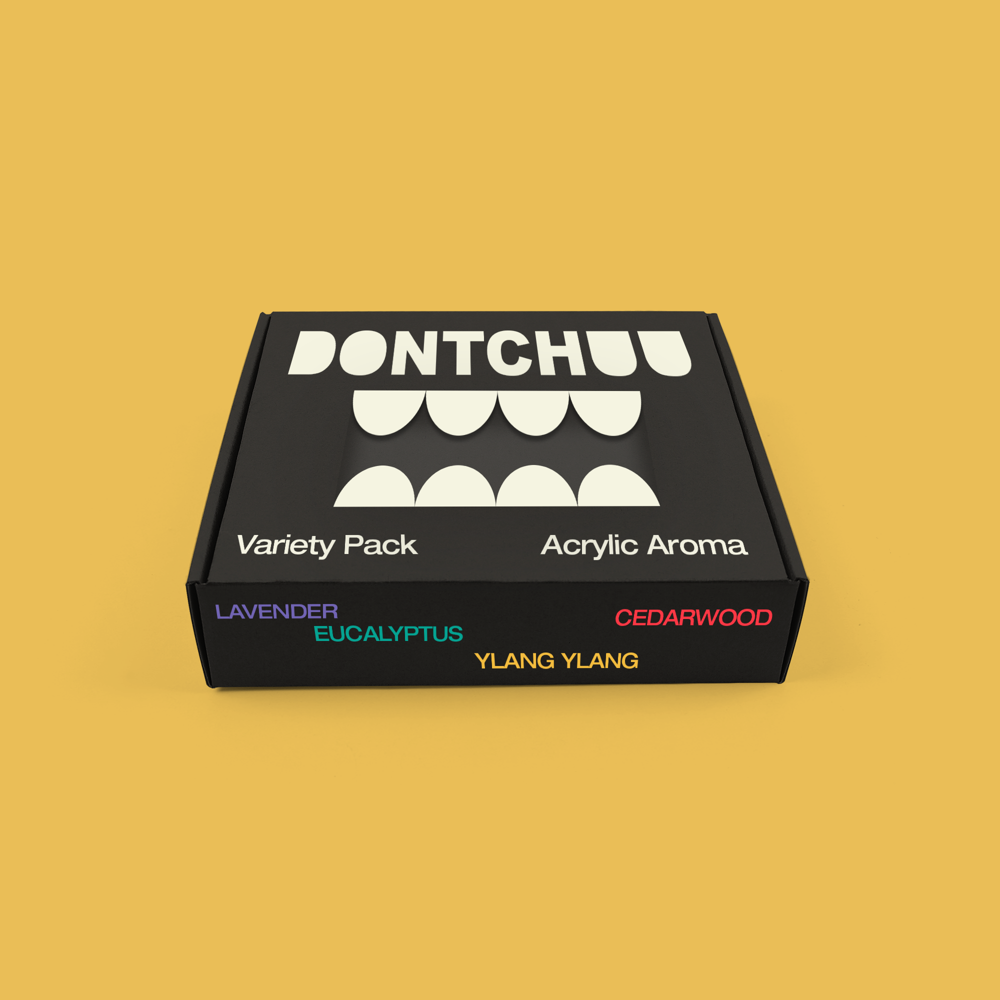
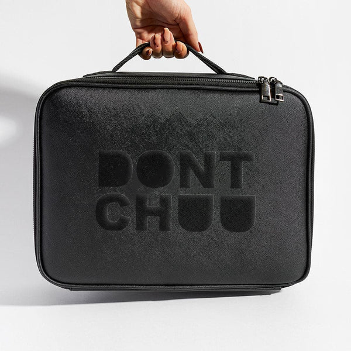
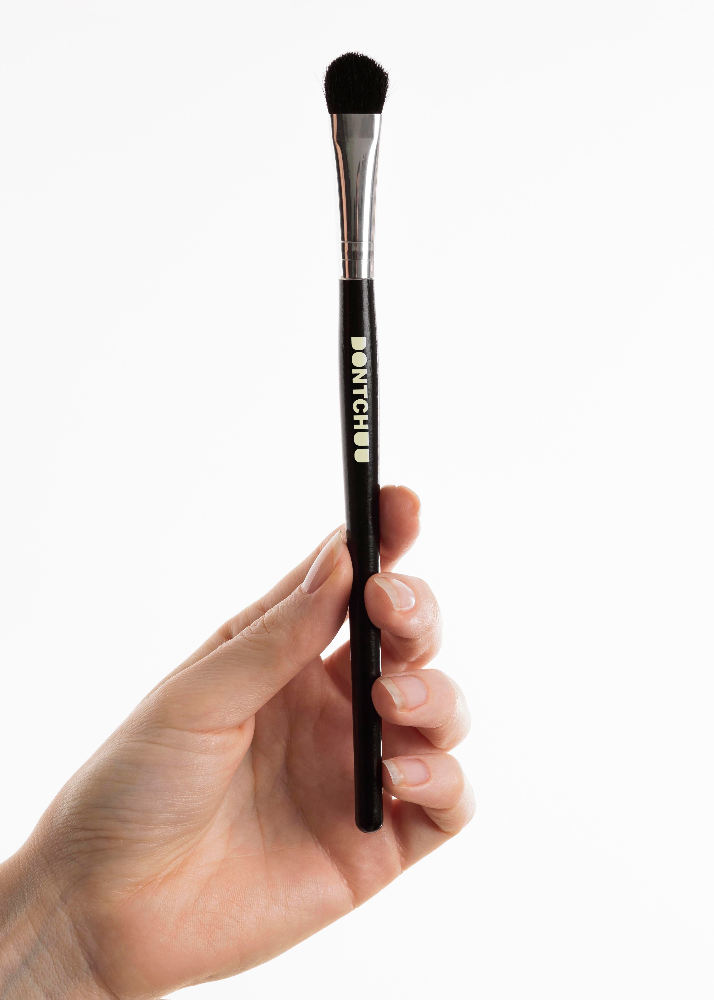

Dontchuu is a scented nail polish brand targeted towards nail-biters. The target audience of this brand is young folks discovering their identity while simultaneously navigating through the stresses of growing up. Each nail polish color and variant is based on aromatherapeutic scents. I wanted the brand to be practical, uplifting, and avant-garde through my design strategy of using a bold word mark, gradients, window cut-outs, and chaotic text placement.


